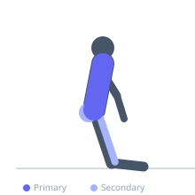
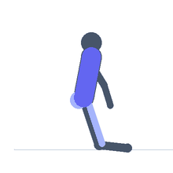

Exercise guide / Child's Pose
Child's Pose
Child's pose is a resting yoga posture that places the spine in a supported flexed position and gently stretches the latissimus dorsi, thoracic extensors, and hip flexors simultaneously. The extended arm variation provides a substantial lat stretch while the kneeling position creates mild hip flexor lengthening. It is used widely as a recovery position, a breathing exercise, and a preparatory or finishing movement in mobility routines.
Primary muscles
latissimus dorsi
erector spinae
Secondary muscles
psoas major
gluteus maximus
Equipment
No Equipment (Bodyweight)


Starting position
- Kneel on the floor with knees wide and toes touching. Sit the hips back toward the heels.
Setup
- Use a mat for comfort. If the hips do not reach the heels, place a folded blanket between the thighs and calves.
Steps
- Step 1: Kneel on the floor with knees wider than hip-width and toes together.
- Step 2: Sit the hips back toward the heels.
- Step 3: Extend both arms forward on the floor as far as possible, lowering the chest toward the floor.
- Step 4: Rest the forehead on the floor or a cushion.
- Step 5: Hold 60–120 seconds, breathing deeply into the back body.
Coaching cues
- Let gravity do the work — just breathe and release
- Walk your fingers further away from your body on each exhale
- Allow the shoulder blades to spread apart
Breathing
- Breathe deeply. On each inhale, feel the ribcage expand sideways and upward. On each exhale, allow the body to sink more completely into the position.
Range of motion
- Extend the arms as far forward as comfortable and allow the forehead to rest on the floor.
Tempo
- Hold 60–120 seconds. 1–3 rounds.
Common mistakes
- Keeping the knees together, which limits hip comfort — wider knees are more accommodating for most people
- Not allowing the arms to extend fully overhead, limiting the lat stretch
- Tensing the neck — allow the head to rest completely
Safety
- If knee discomfort is present, place padding under the knees or avoid if severe
- Those with ankle mobility limitations may need a rolled towel under the ankles
Training
- mobility: 1–3 reps
- mobility: 1–2 sets
- Rest: {'mobility': 15}